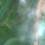
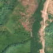

1,3 ha · Măru, com. Zăvoi
văzută schimbată prima dată pe 15 aug. 2026


Nu am găsit nicio autorizație de tăiere în jur.
Terenul: pădure de stat, după amenajamentul silvic publicat.
Ce se vede în poze: În poza detaliată zona marcată era acoperită de pădure deasă, iar în «după» apare un petic de teren gol, roz-brun, care se prelungește în sus pe versant, în timp ce pădurea din jur rămâne verde. Aceasta arată că arborii au fost tăiați pe o suprafață compactă.
în arie protejată: Munții Țarcu